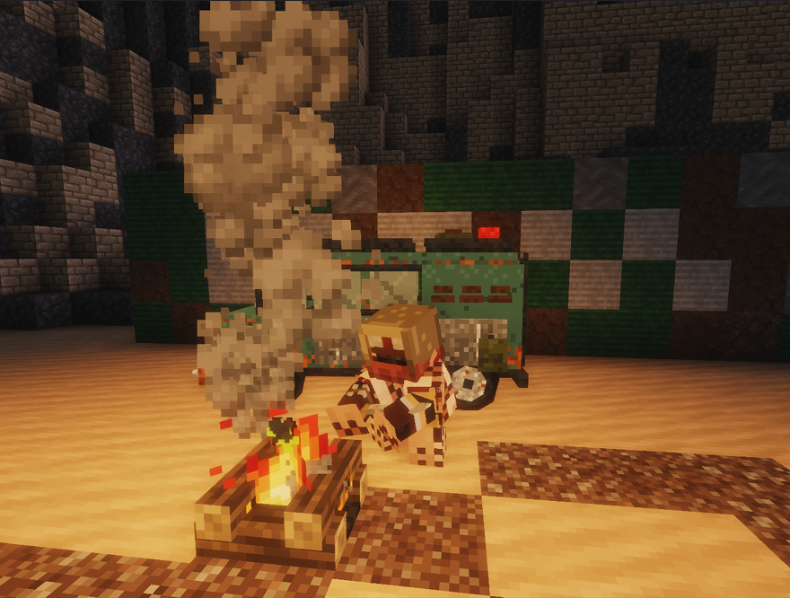
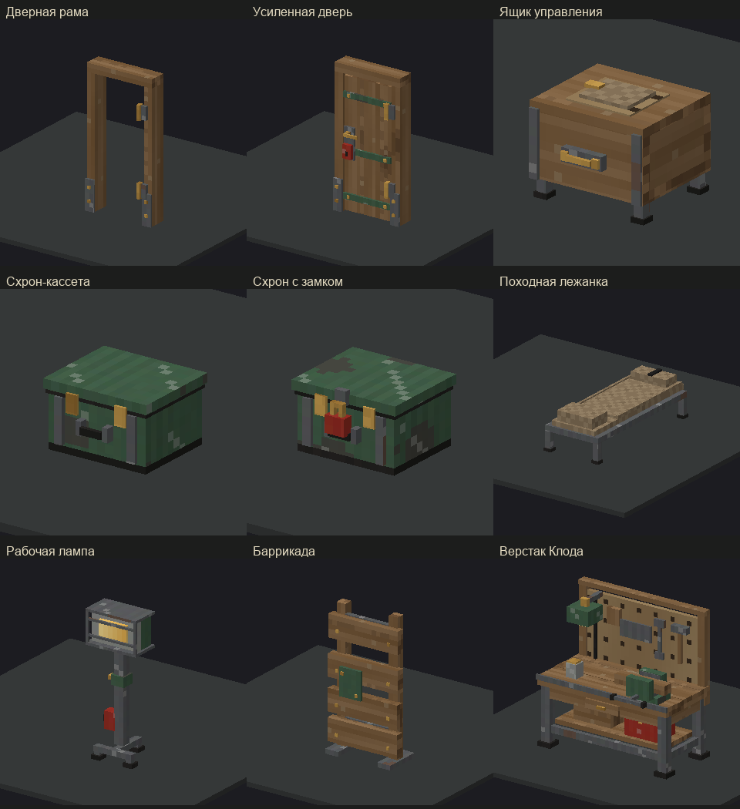

Лагерь у фургона
Кадр из игры. У костра можно отдохнуть, в багажник сложить добычу.
Ролевой сервер про выживание после конца света. Вода на исходе, в пустоши бродят мутанты и Красные маски, а в поселениях живут люди, которые помнят, кто у них воровал. Персонаж один: умер, и его история закончилась.
Аккаунт и лаунчер общие для всех серверов Даркшира. Если ты уже играл на Темнолесье, сразу переходи ко второму шагу.
Регистрация на сайте Даркшира. Ник из аккаунта будет логином в лаунчере, по нему же сервер подбирает скин.
Для Windows есть файл .exe. На Linux и macOS запускай .jar, для него нужна установленная Java.
В лаунчере введи логин и пароль от аккаунта и выбери Темнопустошь. Моды и ресурспак лаунчер скачает сам. Первая загрузка идёт дольше обычного.
При первом входе игра спросит имя, народ, занятие и пару слов биографии. Пока окно не заполнено, ходить нельзя.
Вышло обновление, а в игре вместо значков служебные символы или новые вещи выглядят не так? Закрой игру целиком и запусти её снова через лаунчер: пак и моды обновляются только при запуске.
Коротко о том, чем живёт сервер. Подробности по каждому пункту в вики.
Кровотечения, переломы, заражение раны, жажда и усталость. Оторванную ногу меняют на деревянную или механическую.
Стволы собирают из модулей: магазин, дуло, приклад, прицел. Патронов мало, а крафт патронов дорогой.
Именные жители, поручения, лекари и скупщики. Убитый житель не воскресает, на его место приходит другой человек.
Мутанты, аномалии, газовые зоны, куда без противогаза лучше не соваться, и бандиты, которые приходят за упавшим грузом.
Собери людей, займи комнату в поселении, обставь её и отбивайся от осад. Своё добро можно спрятать в схроне.
Мотоцикл, джип, минивэн. Бензин кончается, замки вскрывают монтировкой, а санки тянут хоть пешком, хоть за машиной.
Кадр из игры и превью моделей. Под каждой картинкой можно открыть механику в вики.

Кадр из игры. У костра можно отдохнуть, в багажник сложить добычу.

Превью моделей. Лежанку, лампу и верстак ставят после первого улучшения комнаты.

Превью нагрудника до и после переделки. Поножи и ботинки делают отдельно.

Превью моделей. Детектор подскажет, где искать. Находка может оказаться неопознанной.
Грязную воду прокипяти. Бинт держи под рукой: кровотечение само по себе может не пройти вовремя.
Без рюкзака свободна только панель быстрого доступа. Котомка или сумка через плечо открывает ещё один ряд.
Открой Связник на I, чтобы посмотреть карту и журнал. Меню ходока открывается на Shift+F.
Вести из Порога, анонсы тестов и отзывы о багах выходят в Discord.